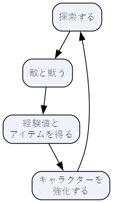
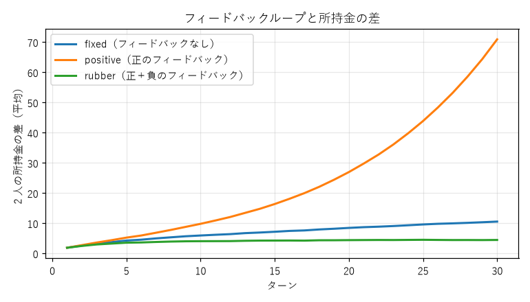

4. ゲームをシステムとして捉える
ゲームは、状態と、状態を変える規則と、プレイヤーの入力からなるシステムである。この見方はエンジニアにはなじみやすく、ゲームの構造を図や数式やプログラムで表して検討できるという利点がある。この章では、コアループ、状態機械、資源の流れ、フィードバックループという 4 つの道具でゲームの構造を表す方法を学ぶ。
4.1. コアループ
プレイヤーがゲームの中で何度も繰り返す一連の行動を、コアループと呼ぶ。コアループはゲームの遊びの中心であり、「このゲームは何をするゲームか」に対する最も短い答えである。
例えば、敵を倒して成長するアクション RPG のコアループは次のように表せる。

図 4.1 アクション RPG のコアループ
コアループを図にすると、次の点を確認できる。
ループの各段階に、プレイヤーが判断する余地や上達する余地があるか。
1 周にかかる時間は適切か。アクションゲームなら数秒から数十秒、ストラテジーゲームなら数分から数十分と、ジャンルによって大きく異なる。
1 周するたびに何かが変わるか。同じことの繰り返しに見えても、キャラクターが強くなる、新しい場所に行けるなどの変化があると、プレイヤーは繰り返しに飽きにくい。
4.1.1. 入れ子になったループ
多くのゲームは、時間の長さが異なる複数のループを入れ子にしている。
![digraph nested_loops {
rankdir=LR;
node [shape=box, style="rounded,filled"];
subgraph cluster_meta {
label="メタループ（数時間〜）";
style="rounded"; color="#a0a0a0";
subgraph cluster_session {
label="二次ループ（数分〜数十分）";
color="#7090c0";
subgraph cluster_core {
label="コアループ（数秒〜数十秒）";
color="#c07070";
move [label="移動", fillcolor="#fbeeee"];
attack [label="攻撃", fillcolor="#fbeeee"];
move -> attack -> move;
}
clear [label="レベルを\nクリアする", fillcolor="#eef3fb"];
equip [label="装備を\n整える", fillcolor="#eef3fb"];
attack -> clear -> equip;
}
story [label="物語を\n進める", fillcolor="#f3f3f3"];
unlock [label="新しい地域が\n開放される", fillcolor="#f3f3f3"];
equip -> story -> unlock;
}
}](_images/graphviz-56f91df2febe1daae132c25eb64c7538ac1bd62d.png)
図 4.2 時間の長さが異なるループの入れ子
一番内側のコアループが面白くなければ、外側のループをどれだけ作り込んでもゲームは面白くならない。設計と試作は、まずコアループから始めるのが原則である。外側のループは、コアループに変化と目標を与え、長く遊び続ける理由を作る役割を持つ。
4.2. 状態機械
ゲームの多くの部分は、有限状態機械で表せる。有限状態機械は、状態遷移図として図に描ける。有限状態機械は、有限個の状態と、どのイベントでどの状態に移るかを表す遷移からなる。ゲームでは、画面の遷移やキャラクターの行動の管理によく使われる。
次の図は、ゲームの画面の遷移を表したものである。
![digraph scenes {
rankdir=LR;
node [shape=box, style="rounded,filled", fillcolor="#eef3fb"];
start [shape=point, width=0.15];
TITLE [label="タイトル"];
PLAYING [label="プレイ中"];
PAUSED [label="ポーズ"];
GAME_OVER [label="ゲームオーバー"];
start -> TITLE;
TITLE -> PLAYING [label="START"];
PLAYING -> PAUSED [label="PAUSE"];
PAUSED -> PLAYING [label="RESUME"];
PLAYING -> GAME_OVER [label="PLAYER_DIED"];
GAME_OVER -> TITLE [label="CONFIRM"];
}](_images/graphviz-109040e803a0f408645aa4350bc94ab22d2f8943.png)
図 4.3 ゲーム画面の状態遷移
この状態遷移を Python で書いたものが リスト 4.1 である。遷移を辞書（遷移表）で表しているので、表に無い組み合わせのイベントは自動的に無視される。例えば、ポーズ中に「プレイヤーが倒された」というイベントが届いても、ゲームオーバーにはならない。
1"""ゲーム画面の状態遷移を表す有限状態機械のサンプル。
2
3タイトル → プレイ → ポーズ → ゲームオーバー → タイトル という画面の流れを、
4「状態」と「イベント」と「遷移表」で表す。遷移表に無い組み合わせのイベントは無視する。
5
6実行例:
7 python state_machine.py
8"""
9
10from __future__ import annotations
11
12from enum import Enum, auto
13
14
15class Scene(Enum):
16 """ゲーム画面（状態）。"""
17
18 TITLE = auto()
19 PLAYING = auto()
20 PAUSED = auto()
21 GAME_OVER = auto()
22
23
24class Event(Enum):
25 """状態を変えるきっかけ（イベント）。"""
26
27 START = auto()
28 PAUSE = auto()
29 RESUME = auto()
30 PLAYER_DIED = auto()
31 CONFIRM = auto()
32
33
34# (現在の状態, イベント) → 次の状態
35TRANSITIONS: dict[tuple[Scene, Event], Scene] = {
36 (Scene.TITLE, Event.START): Scene.PLAYING,
37 (Scene.PLAYING, Event.PAUSE): Scene.PAUSED,
38 (Scene.PAUSED, Event.RESUME): Scene.PLAYING,
39 (Scene.PLAYING, Event.PLAYER_DIED): Scene.GAME_OVER,
40 (Scene.GAME_OVER, Event.CONFIRM): Scene.TITLE,
41}
42
43
44class SceneMachine:
45 """遷移表に従って現在の画面を切り替える。"""
46
47 def __init__(self, initial: Scene = Scene.TITLE) -> None:
48 self.current = initial
49
50 def handle(self, event: Event) -> bool:
51 """イベントを処理する。状態が変わったら True を返す。"""
52 next_scene = TRANSITIONS.get((self.current, event))
53 if next_scene is None:
54 return False
55 self.current = next_scene
56 return True
57
58
59def main() -> None:
60 machine = SceneMachine()
61 # プレイ中でないのに PLAYER_DIED が届く、といった不正なイベントも混ぜておく。
62 events = [
63 Event.PLAYER_DIED,
64 Event.START,
65 Event.PAUSE,
66 Event.PLAYER_DIED,
67 Event.RESUME,
68 Event.PLAYER_DIED,
69 Event.CONFIRM,
70 ]
71 print(f"開始: {machine.current.name}")
72 for event in events:
73 before = machine.current
74 changed = machine.handle(event)
75 result = f"{before.name} -> {machine.current.name}" if changed else f"{before.name} のまま（無視）"
76 print(f"{event.name:12s}: {result}")
77
78
79if __name__ == "__main__":
80 main()
実行すると次のように表示される。
1開始: TITLE
2PLAYER_DIED : TITLE のまま（無視）
3START : TITLE -> PLAYING
4PAUSE : PLAYING -> PAUSED
5PLAYER_DIED : PAUSED のまま（無視）
6RESUME : PAUSED -> PLAYING
7PLAYER_DIED : PLAYING -> GAME_OVER
8CONFIRM : GAME_OVER -> TITLE
状態機械で設計を表すと、「この状態でこのイベントが起きたらどうなるか」をすべての組み合わせについて検討できる。仕様の抜けや矛盾を早い段階で見つけられるので、デザイナーとプログラマーの間で仕様を確認する道具としても有効である。
4.2.1. キャラクターの状態
キャラクターの行動も状態機械で表せる。次の図は、横スクロールのアクションゲームのキャラクターの例である。
![digraph character {
node [shape=box, style="rounded,filled", fillcolor="#eef3fb"];
idle [label="立ち"];
run [label="走り"];
jump [label="上昇"];
fall [label="落下"];
damage [label="やられ"];
idle -> run [label="左右キー"];
run -> idle [label="キーを離す"];
idle -> jump [label="ジャンプ"];
run -> jump [label="ジャンプ"];
run -> fall [label="足場から出る"];
jump -> fall [label="速度が下向き"];
fall -> idle [label="着地"];
idle -> damage [label="敵に触れる"];
run -> damage;
jump -> damage;
fall -> damage;
}](_images/graphviz-9aed45f47bd73e541663261eb1de720776f977e7.png)
図 4.4 キャラクターの状態遷移
図にすると「落下中にジャンプボタンを押したらどうなるか」「やられ状態から戻るのはどの状態か」といった、仕様で決めるべき点が見えてくる。落下中のジャンプは、第 7 章で扱うコヨーテタイムや先行入力の設計に関わる。
4.3. 資源の流れ
多くのゲームには、金貨、体力、弾薬、木材のように、増えたり減ったりする量（資源）がある。資源の増減を流れとして図に表すと、ゲームの経済を設計しやすくなる。ゲームデザイナーのヨリス・ドルマンスは、こうした図を描いてシミュレーションするための記法「Machinations」を提案した。ここでは、その考え方を借りて、資源の流れを次の 4 つの要素で表す。
要素 |
意味 |
例 |
|---|---|---|
ソース（湧き出し口） |
資源を生み出す |
敵を倒すと金貨が出る。時間とともに体力が回復する |
プール（貯まる場所） |
資源を貯めておく |
所持金、所持アイテム、体力の残量 |
シンク（吸い込み口） |
資源を消す |
店での買い物、修理費、ダメージ |
変換器 |
ある資源を別の資源に変える |
鉱石を武器に加工する。経験値でスキルを習得する |
![digraph economy {
rankdir=LR;
node [style=filled];
enemy [label="敵を倒す\n（ソース）", shape=triangle, fillcolor="#d8f0d8"];
quest [label="依頼の報酬\n（ソース）", shape=triangle, fillcolor="#d8f0d8"];
wallet [label="所持金\n（プール）", shape=circle, fillcolor="#fff4c8"];
shop [label="武器を買う\n（変換器）", shape=box, fillcolor="#eef3fb"];
inn [label="宿代・修理費\n（シンク）", shape=invtriangle, fillcolor="#f8dada"];
power [label="攻撃力\n（プール）", shape=circle, fillcolor="#fff4c8"];
enemy -> wallet;
quest -> wallet;
wallet -> shop;
shop -> power;
wallet -> inn;
power -> enemy [style=dashed, label="倒す速さが上がる"];
}](_images/graphviz-1378758430a5d3440ac49dcac0797120a787ddd3.png)
図 4.5 RPG の金貨の流れ
ソースとシンクのつり合いが崩れると、ゲームの経済は破綻する。ソースが強すぎると資源が余り、買い物で悩むという選択の面白さが失われる。オンラインゲームでは、プレイヤー全体の通貨が増え続けて物価が上がるインフレーションがよく問題になる。逆にシンクが強すぎると、プレイヤーは常に資源不足に悩まされ、窮屈に感じる。
4.4. フィードバックループ
上の図で、攻撃力から「敵を倒す」へ戻る点線の矢印に注目してほしい。金貨で強い武器を買うと敵を速く倒せるようになり、さらに金貨が貯まりやすくなる。このように、ある量の変化が巡り巡って同じ量をさらに変化させる構造を、フィードバックループと呼ぶ。
種類 |
働き |
例 |
|---|---|---|
正のフィードバック |
差を広げる。勝っている側がさらに有利になる |
モノポリーで土地を多く持つ人ほど収入が増え、さらに土地を買える |
負のフィードバック |
差を縮める。負けている側が追いつきやすくなる |
レースゲームで後ろを走るほど強いアイテムが出る |
正のフィードバックは、ゲームを決着に向かわせる力になる。序盤の小さな有利が拡大していく感覚は気持ちがよく、ゲームが際限なく長引くことも防ぐ。しかし強すぎると、序盤で勝負が決まり、負けている側は残りの時間を消化試合として過ごすことになる。
負のフィードバックは、ゲームを接戦に保つ力になる。最後まで逆転の可能性が残るので、全員が最後まで真剣に遊べる。しかし強すぎると、序盤にどれだけ頑張っても結果に影響しなくなり、努力が報われないと感じさせる。負けている側を助ける仕組みは、輪ゴムで引き戻すような働きにたとえてラバーバンドとも呼ばれる。
4.4.1. シミュレーションで確かめる
フィードバックの効果は、シミュレーションで確かめるとよく分かる。リスト 4.2 は、2 人のプレイヤーが毎ターンさいころを振って金貨を得るという単純な経済で、次の 3 つのルールを比べるプログラムである。
fixed：収入はさいころの目だけ（フィードバックなし）
positive：所持金の 10 % が利子として増える（正のフィードバック）
rubber：positive に加え、負けている側が差の 20 % を補助として受け取る（負のフィードバック）
23TURNS = 30
24RUNS = 2000
25INTEREST_RATE = 0.10
26CATCH_UP_RATE = 0.20
27
28# 1 ターン分の更新処理: (自分の所持金, 相手の所持金, さいころの目) → 新しい所持金
29Rule = Callable[[float, float, int], float]
30
31
32def fixed_income(gold: float, rival: float, dice: int) -> float:
33 return gold + dice
34
35
36def positive_feedback(gold: float, rival: float, dice: int) -> float:
37 return gold + dice + gold * INTEREST_RATE
38
39
40def rubber_band(gold: float, rival: float, dice: int) -> float:
41 bonus = (rival - gold) * CATCH_UP_RATE if gold < rival else 0.0
42 return positive_feedback(gold, rival, dice) + bonus
43
44
45RULES: dict[str, Rule] = {
46 "fixed（フィードバックなし）": fixed_income,
47 "positive（正のフィードバック）": positive_feedback,
48 "rubber（正＋負のフィードバック）": rubber_band,
49}
50
51
52def simulate_gap(rule: Rule, rng: random.Random) -> list[float]:
53 """1 回のゲームを最後まで進め、各ターン終了時の所持金の差を返す。"""
54 a = b = 0.0
55 gaps: list[float] = []
56 for _ in range(TURNS):
57 dice_a, dice_b = rng.randint(1, 6), rng.randint(1, 6)
58 a, b = rule(a, b, dice_a), rule(b, a, dice_b) # 2 人を同時に更新する
59 gaps.append(abs(a - b))
60 return gaps
61
62
63def average_gap(rule: Rule, seed: int) -> list[float]:
64 """RUNS 回のゲームについて、ターンごとの差の平均を求める。"""
65 rng = random.Random(seed)
66 totals = [0.0] * TURNS
67 for _ in range(RUNS):
68 for turn, gap in enumerate(simulate_gap(rule, rng)):
69 totals[turn] += gap
70 return [total / RUNS for total in totals]
各ルールで 2000 回ずつゲームを行い、ターンごとの所持金の差を平均した結果が次の図である。

図 4.6 フィードバックループと所持金の差
フィードバックの無いルールでは、差はさいころの運によって少しずつ広がる程度である。正のフィードバックを加えると、運によって生じた小さな差が利子によって拡大し、30 ターン後には 7 倍近い差になる。負のフィードバックを組み合わせると、差はほとんど広がらなくなる。
どれが正しいということはなく、作りたい体験によって選ぶ。運よりも戦略で決着してほしいなら正のフィードバックを抑えめにし、接戦を楽しんでほしいなら負のフィードバックを加える。重要なのは、こうした効果を「なんとなく」ではなく、シミュレーションで数値として確かめられることである。
4.5. 創発
少数の単純なルールが組み合わさって、ルールからは直接予想できない複雑な振る舞いが生じることを、創発と呼ぶ。囲碁のルールは数行で説明できるが、そこから生まれる戦略は何千年もの間研究されても尽きない。
研究者のユールは、ゲームの構造を 2 つの型に分けた。
型 |
特徴 |
例 |
|---|---|---|
創発型 |
少数のルールの組み合わせから多様な状況が生まれる。遊ぶたびに展開が変わる |
囲碁、将棋、テトリス、多くの対戦ゲーム |
進行型 |
デザイナーが用意した出来事を順番に体験していく。展開はほぼ決まっている |
物語を重視したアドベンチャーゲーム |
多くのビデオゲームは両方の要素を持つ。アクションゲームのレベルは、デザイナーが用意した順番で進む（進行型）が、敵とプレイヤーの動きの組み合わせはその場で生まれる（創発型）。
創発は、デザイナーが予想しなかった面白い遊びを生む源泉である。一方で、予想しなかった攻略法（バランスを壊す必勝法や、レベルの一部を飛ばす近道）も生む。ルールを組み合わせたときにどのような振る舞いが起きうるかを、実際に遊んだりシミュレーションしたりして確かめることが欠かせない。
4.6. 演習
好きなゲームのコアループを図に描け。入れ子になった外側のループがあれば、それも描け。
同じゲームの資源を 1 つ選び、ソース、プール、シンク、変換器を書き出せ。
リスト 4.2 の
INTEREST_RATEとCATCH_UP_RATEを変えて実行し、所持金の差がどう変わるかを確かめよ。差がほとんど広がらず、それでいて先行した側がわずかに有利であり続けるような値を探せ。正のフィードバックが強すぎて、序盤で勝負が決まってしまうゲームの例を挙げ、負のフィードバックを加える方法を提案せよ。